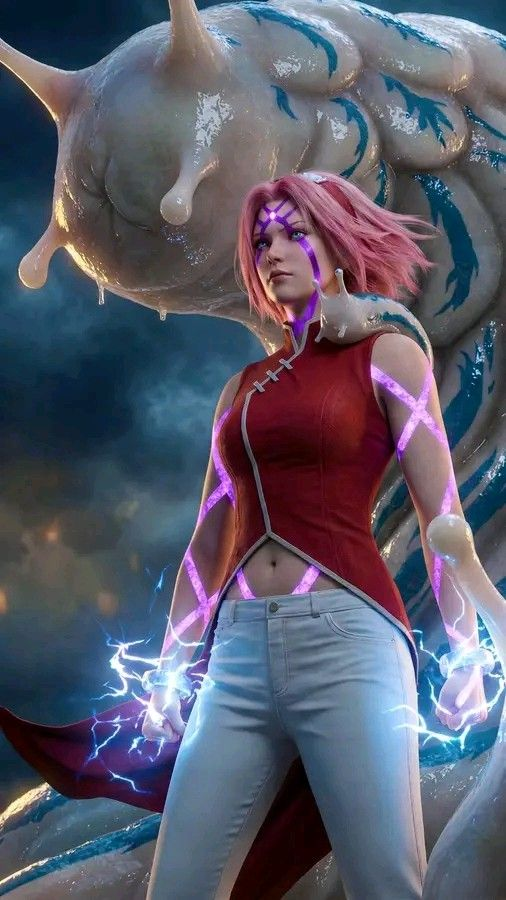

Sakura Haruno is one of the main characters in Naruto, known for her intelligence, strength, and growth throughout the story. She was born in Konohagakure and was originally a member of Team 7 alongside Naruto Uzumaki and Sasuke Uchiha, under the leadership of Kakashi Hatake. At the beginning, Sakura was known more for her intelligence and chakra control than her combat ability. However, determined to become stronger, she trained under Tsunade, one of the legendary Sannin, and became an exceptional medical ninja. Through this training, she gained incredible strength and precise chakra control, allowing her to defeat powerful enemies and heal allies in critical condition.
Sakura played an important role in many battles, including the Fourth Great Ninja War, where her medical skills and strength saved countless lives. She is also known for her emotional growth, becoming more confident and independent over time. Later, Sakura marries Sasuke and becomes Sakura Uchiha, continuing her work as a leading medical ninja. Her journey reflects perseverance, growth, and the importance of inner strength, making her a respected and inspiring character in the Naruto series.
Sakura Haruno has a well-developed and evolving personality in Naruto, making her one of the most relatable characters in the story. In the beginning, she is intelligent and academically strong but somewhat insecure and overly focused on her feelings for Sasuke Uchiha. She can also be quick-tempered, especially toward Naruto Uzumaki, often reacting with frustration to his antics. As the series progresses, Sakura matures significantly. She becomes more confident, emotionally strong, and determined to stand alongside her teammates rather than rely on them. Her training under Tsunade helps her develop discipline, resilience, and a strong sense of responsibility.
Sakura is deeply compassionate and caring, especially when it comes to protecting her friends and healing others. She shows great courage in difficult situations and is willing to risk her life for those she loves. Although she still has moments of emotional vulnerability, she learns to control her feelings and make rational decisions. Overall, Sakura’s personality is a balance of strength and sensitivity, showing growth from insecurity to confidence, making her a strong and inspiring character in the Naruto series.
Sakura Haruno possesses a powerful set of abilities that make her one of the strongest kunoichi in Naruto. Her strength comes from precise chakra control and advanced medical skills, developed through training under Tsunade. One of Sakura’s greatest abilities is medical ninjutsu, allowing her to heal severe injuries, perform complex surgeries, and save lives even in critical conditions. She is highly skilled in diagnosing and treating wounds during battle, making her an essential support ninja.
Sakura is also known for her immense physical strength, achieved by concentrating chakra into her fists. With a single punch, she can shatter the ground or defeat powerful enemies. This strength makes her extremely effective in close combat. Another important ability is the Strength of a Hundred Seal, which stores chakra over time and releases it to grant rapid healing and enhanced power. This allows Sakura to regenerate from serious injuries and continue fighting without slowing down. In addition, she has excellent intelligence, reflexes, and chakra control, making her both a strong fighter and a skilled healer. Sakura’s combination of strength, precision, and medical expertise makes her a vital and powerful ninja.

Sakura Haruno has participated in several important missions throughout Naruto, showcasing both her combat abilities and medical expertise. One of her most significant missions was the rescue mission to save Gaara from the Akatsuki. During this mission, Sakura fought alongside Chiyo and played a key role in defeating Sasori, proving her growth as a powerful ninja. Another important mission was her continuous effort to bring back Sasuke Uchiha, working alongside Naruto Uzumaki. Although she faced emotional struggles, she remained determined to help her teammate return to the village.
During the Fourth Great Ninja War, Sakura played a crucial role as a frontline medical ninja. She healed countless injured shinobi and also fought powerful enemies directly, showing both strength and courage. Sakura also carried out many medical and support missions under Tsunade, helping improve the medical system of Konohagakure. Her missions highlight her growth from a support role to a strong and reliable ninja who plays a vital part in both battle and healing.
Sakura Haruno does not have Sage Mode in Naruto. Unlike Naruto Uzumaki or Jiraiya, she was never shown learning or using senjutsu (natural energy techniques). Instead of Sage Mode, Sakura’s strength comes from her exceptional chakra control and advanced medical ninjutsu, which she learned under Tsunade. One of her most powerful abilities is the Strength of a Hundred Seal, which allows her to store chakra over time and release it for enhanced power and rapid healing. This technique gives her abilities similar to regeneration, making her extremely durable in battle.
Sakura also possesses incredible superhuman strength, allowing her to defeat strong enemies with a single punch, and she plays a crucial role as a medical ninja during battles. While she does not use Sage Mode, her combination of healing, strength, and precise control makes her one of the most powerful kunoichi in the series.